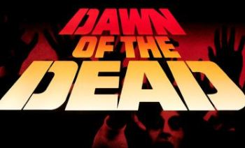
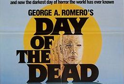
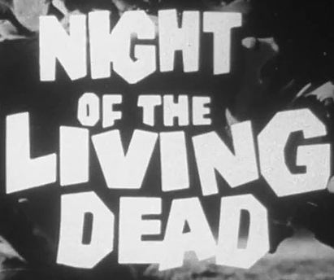

Рассвет, день, закат и ночь живых мертвецов.
«Рассвет мертвецов» (Dawn of the Dead), 1978

«День мертвецов» (Day of the Dead), 1985

«Ночь живых мертвецов» (Night of the Living Dead), 1968

А вот "заката", как и "вечера" не существует =)